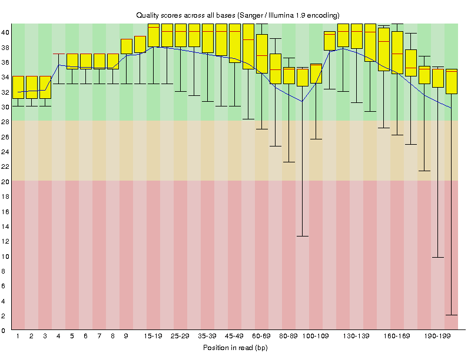
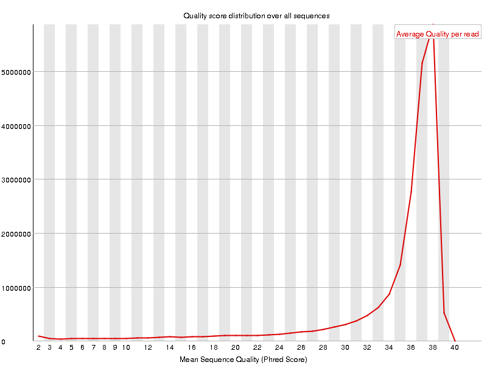
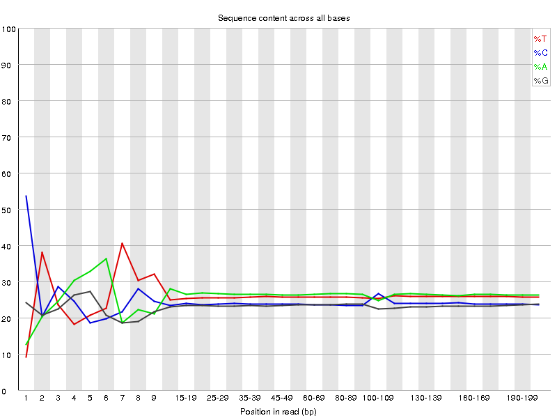
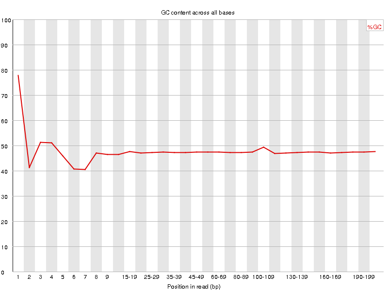
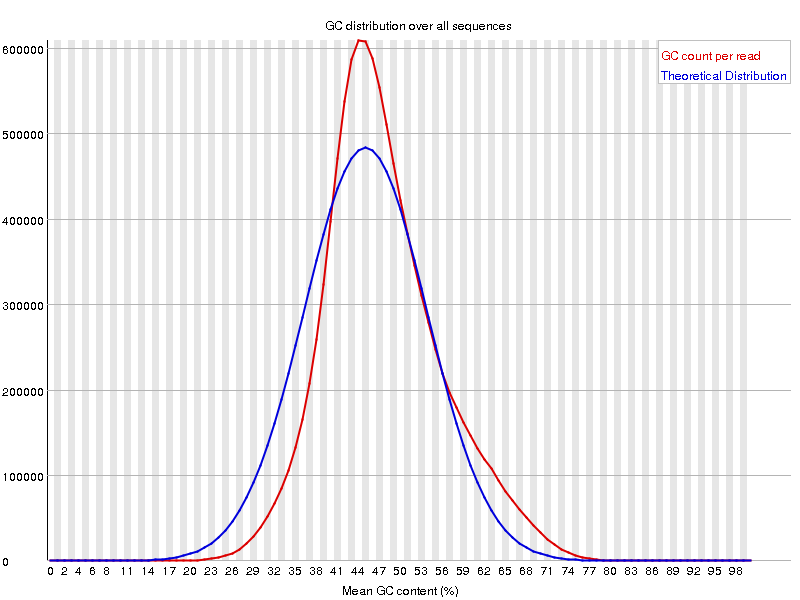
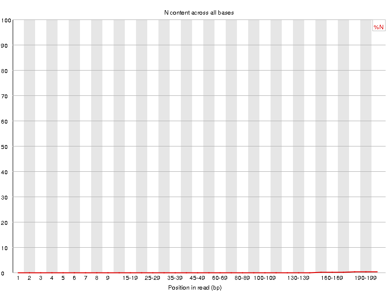
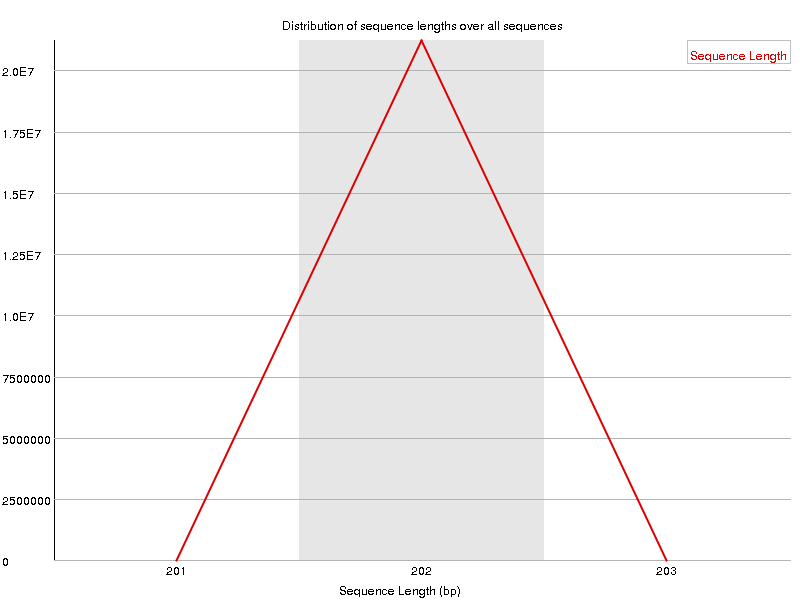
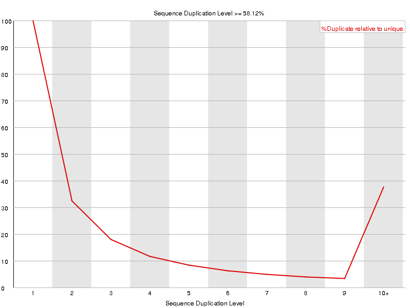
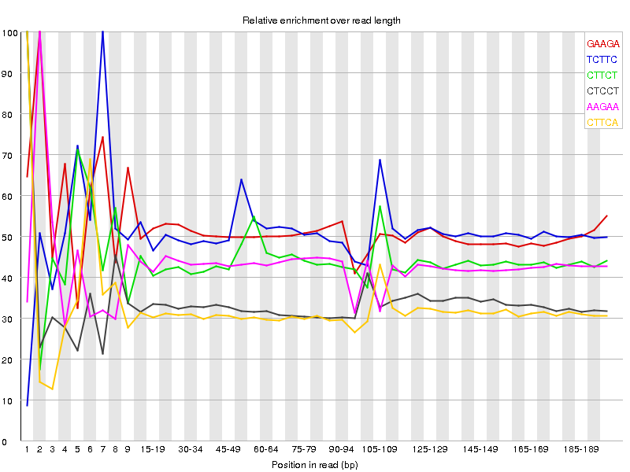

![[OK]](Icons/tick.png) Basic Statistics
Basic Statistics
| Measure | Value |
|---|---|
| Filename | SRR1642915.fastq |
| File type | Conventional base calls |
| Encoding | Sanger / Illumina 1.9 |
| Total Sequences | 21213480 |
| Filtered Sequences | 0 |
| Sequence length | 202 |
| %GC | 47 |
Per base sequence quality

Per sequence quality scores

![[FAIL]](Icons/error.png) Per base sequence content
Per base sequence content

Per base GC content

![[WARN]](Icons/warning.png) Per sequence GC content
Per sequence GC content

Per base N content

Sequence Length Distribution

Sequence Duplication Levels

Overrepresented sequences
| Sequence | Count | Percentage | Possible Source |
|---|---|---|---|
| AGATCGGAAGAGCACACGTCTGAACTCCAGTCACCTTGTAATCTCGTATG | 42429 | 0.20000961652684993 | TruSeq Adapter, Index 12 (100% over 49bp) |
| GATCGGAAGAGCACACGTCTGAACTCCAGTCACCTTGTAATCTCGTATGC | 21636 | 0.10199175241403108 | TruSeq Adapter, Index 12 (100% over 50bp) |
Kmer Content

| Sequence | Count | Obs/Exp Overall | Obs/Exp Max | Max Obs/Exp Position |
|---|---|---|---|---|
| GAAGA | 11350435 | 2.6700087 | 5.288753 | 2 |
| TCTTC | 11349065 | 2.6463413 | 5.1928163 | 7 |
| CTTCT | 10568870 | 2.464418 | 5.5792785 | 1 |
| CTCCT | 9633680 | 2.402807 | 7.252497 | 1 |
| AAGAA | 11068180 | 2.3015187 | 5.40721 | 2 |
| CTTCA | 9549765 | 2.1812878 | 6.9202313 | 1 |
| CTCCA | 8308740 | 2.0300012 | 7.8300614 | 1 |
| CTTGA | 7220300 | 1.7085629 | 5.877607 | 1 |
| GAGAT | 6872760 | 1.6504291 | 5.204616 | 3 |
| AGATC | 7072425 | 1.6393759 | 5.6542788 | 4 |
| CTCAA | 7037590 | 1.5746307 | 6.7549005 | 1 |
| CTTGG | 5872360 | 1.5719918 | 6.3354244 | 1 |
| CTTTG | 6480190 | 1.5654132 | 5.6520653 | 1 |
| CTCCC | 5702695 | 1.5214149 | 5.2842283 | 1 |
| GATCT | 6305360 | 1.4920577 | 5.228967 | 5 |
| CTGAA | 6399745 | 1.48345 | 5.254935 | 1 |
| CTGGA | 5218410 | 1.3683914 | 6.285195 | 1 |
| CTCAG | 5320970 | 1.3468133 | 6.405053 | 1 |
| CTCCG | 4768765 | 1.318041 | 5.041864 | 1 |
| CTCGA | 4869245 | 1.2324754 | 5.770264 | 1 |
| CTCGG | 3558230 | 1.0188553 | 5.387532 | 1 |
| CTGGG | 3397150 | 1.0077404 | 5.166259 | 1 |